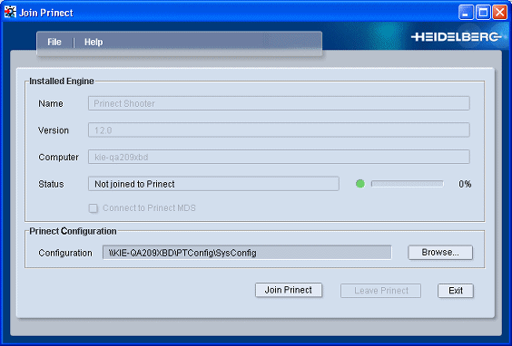

If you would like a new installation or an update installation of the Prinect Integration Manager-software, you must log Prinect Shooter out of the Prinect Integration Manager again before the new installation or update. To do this, open the "Join Prinect" program again in "Administration > Configuration > JDF Portal" as described above and click the "Leave" button. Confirm the following alert messages with "Yes" or "OK".
1. Wait until the "Not joined to Prinect" status message appears:

2. Close the "Join Prinect" dialog by clicking "Exit". Prinect Shooter is logged off from the Prinect system. Now you can, for example, run a new installation and register Prinect Shooter again on the Prinect system.
 Copyright © 2013 Heidelberger Druckmaschinen AG
Copyright © 2013 Heidelberger Druckmaschinen AG